Parcels
Oct 30, 2026
The game has come quite a ways since my last dev log. These last rounds of iteration focused primarily on appearance, feel, and performance. This meant rewriting the way the game handles rendering, procedural generation, and simulation. I'll break down the changes below.

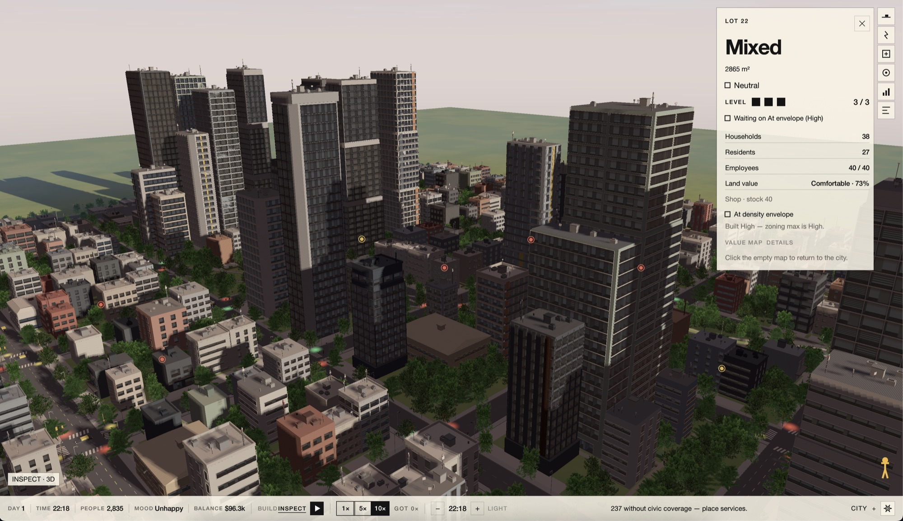
Appearance
The look is now a cool, glassy skyline instead of extruded beige blocks. I was inspired by Mirror's Edge and SimCity (2013). I wanted to create an airy feel that is also grounded in reality, and looks like a place you can visit.
- Buildings use a kit of masses (slabs, setbacks, chamfered boxes, rare cylinders), with floor-to-ceiling grids, sheet glass, and varied roofs. Neighboring lots stay separated, and a parcel keeps the same building when the camera moves or the sim remeshes.
- Glass samples a sky environment (zenith, horizon, ground, sun) with Fresnel, so towers read as sky by day and warm windows by night. Distant mullions and lane paint fade out before they shimmer.
- Street trees are alpha-cut billboards. Signals, stop signs, and lamps read at street level. Cars have headlights, taillights, and soft ground pools. Lamp light stays cool; window spill stays warm.
- Roads draw as continuous curves, roundabouts, medians, bus lanes, and one-way arrows.
The UI also got a grand overhaul. I was inspired by Anduril's paper-style web interface and bold font choices. I wanted to create an interface that feels refined, yet also blends in with your city. If you notice, the color of the background changes based on the time of day, turning a slight warm parchment color during sunrise, white during the day, and a cool blue at night. It also has a slight translucency that gives it a floating effect. I'm going for a utilitarian, edgy look that contrasts well with the warmth of the city.

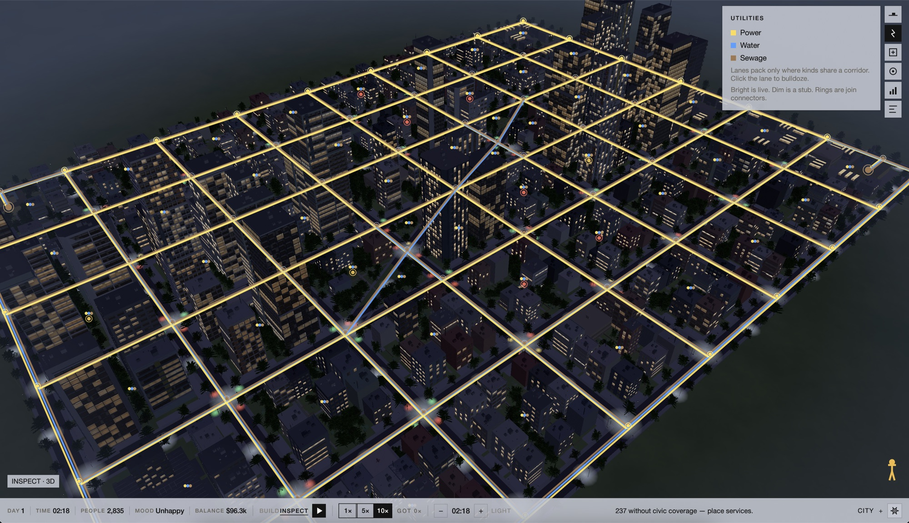
Power, water, and sewage on the grid. Bright is live, dim is a stub.

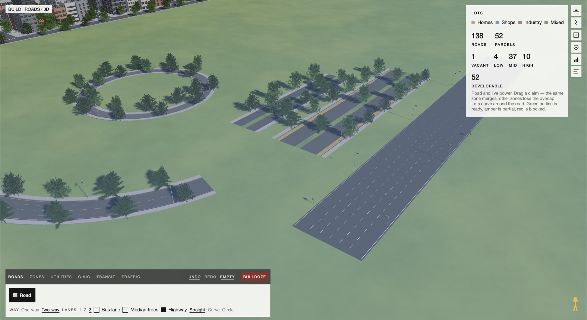
A curve, a roundabout, a tree median, and a highway.

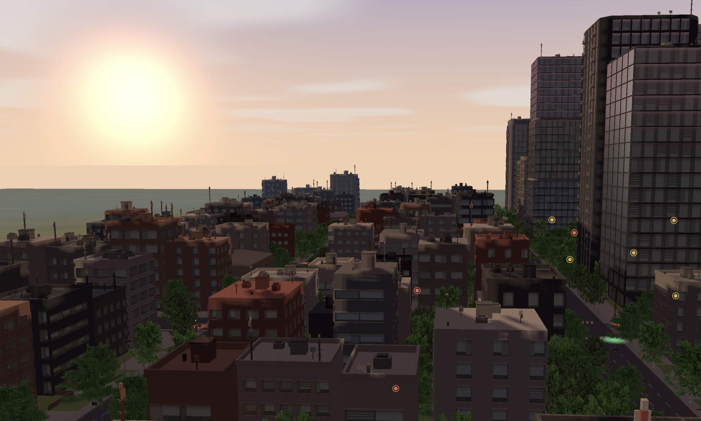
The glass picks up the sunset.

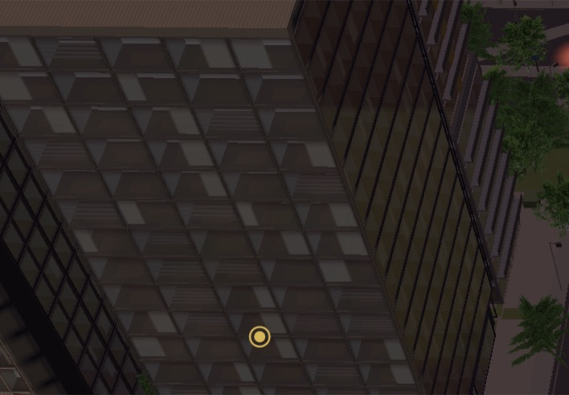
Floor-to-ceiling grids and sheet glass. Reflections here use SSR, and a baked snapshot of the map fills the gap between the sky and the reflected content.

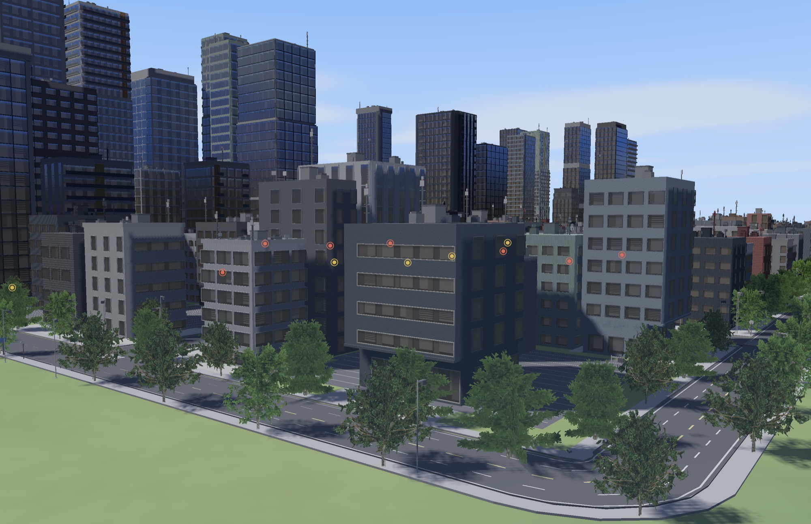
Slabs and setbacks along a curved corner.

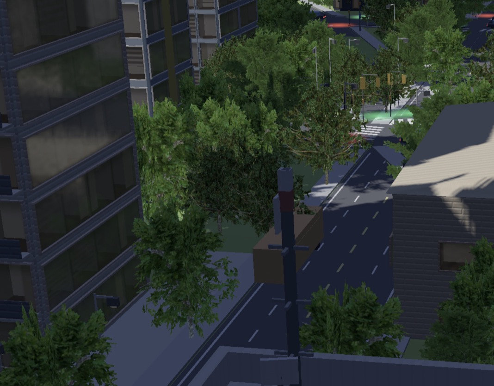
Street trees, signals, and a lamp, down at the curb. Thanks to sixonetwo for creating this awesome tree pack!
Feel
The city not only looks like a real place but plays like one, with tools that match that.
- Trips leave the front door and stay on the road between work, school, shop, and home. Students walk to a neighborhood school. Cars hold their lane instead of jumping, and queues stop at the bar instead of locking the junction.
- You can drag a person onto a road and walk it at eye height (about 3.5 m/s, faster with Shift). The street HUD also disappears, giving you a great look at the city at street level.
- Schools, clinics, fire, and police are civic buildings with wings and bays. Uncovered lots catch fire more often; a truck can put it out, or the building burns down.
- Inspect is a parcel card plus an Economy chart on a slim bottom bar. Tax rate and congestion toll are sliders. Land value and a short “why” diagnose what is stuck. The clock starts at dawn.

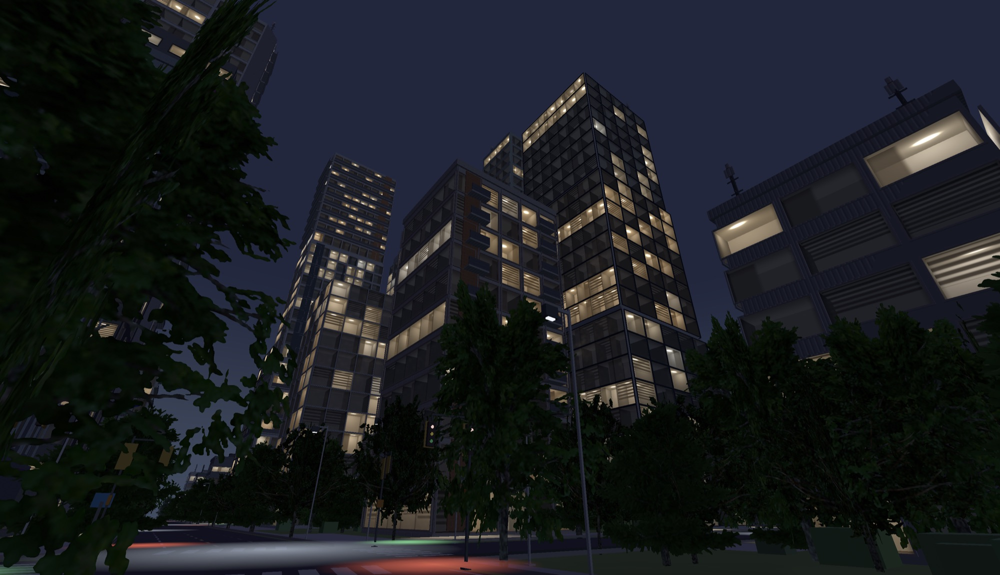
Night street. Windows stay warm, lamps stay cool, and the trees are billboards. This shot is the walking view.

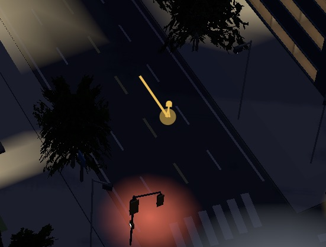
The person you drag onto a road to enter the walking view.

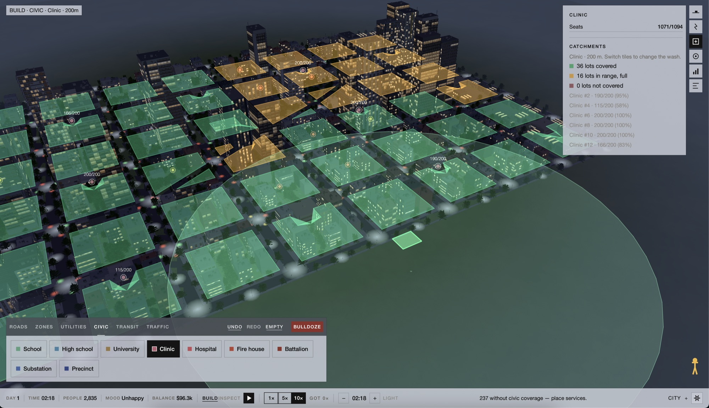
Contextual UI for placing a clinic and reading its catchment.

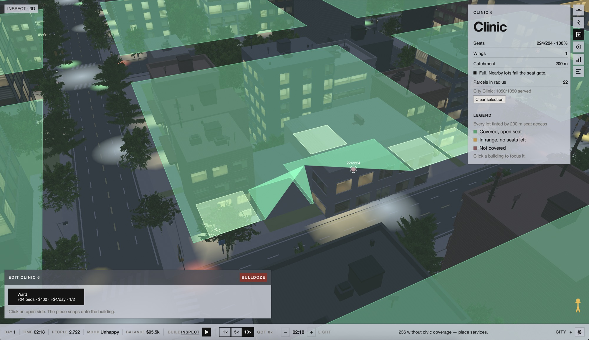
Contextual UI for the selected clinic, including its wings.
Performance
The sim is sized for a full morning at city scale. I moved the simulation off of the main core, so it now runs parallel with the UI thread. This means even if the simulation slows down, you still get a buttery 60 frames per second. Disconnecting the sim from the UI has been a great move, and we'll see how well it holds up as a city scales past 100k; the smoke tests have been green so far!
- A 100k-resident metro holds a frame at 60 fps and 10× speed. Residents sit on wake lists; only a capped set is lane-simulated, and the screen instances published poses.
- The sim clock runs on its own worker. Behavior, economy, and services are staggered across the tick so they do not all land on tick 0. Each trip loads only the link it is on, and routing reuses cached corridors.
- Far buildings stay on cheap mass and silhouette detail. A megalopolis seed exists specifically to stress the 100k morning.
One note on traffic and agent simulation - similar games (like Cities Skylines 2) actually render each individual agent, and creates pathfinding jobs that are split across your computer's cores. This may seem enticing at first, but this means that the limit is no longer a hard cap, but rather how good your hardware is. This isn't a great model, and there is a better solution.
I agree with this Medium article that Korawich Kavee wrote - "going back to purely statistical cities feels lifeless, but purely agent-based like 1 to 1 is probably too much." That's the approach I am taking with Parcels, and why I am modeling agents as "groups" rather than "individuals". The idea here is that an agent will make the same route choice as a similar agent, based on age, education, occupation, and residency to start. This allows me to pathfind and perform calculations on batches, which generally scales well as a city grows (you can just increase batch size).
Of course, this works on a macro level. But as soon as you zoom into a specific corridor or street, the batch gets split up and agents pathfind individually. You get the theater without the overhead!
What's next
I did mention in my previous dev log that I was planning on adding an actual game engine. I realized, however, that writing everything from scratch in pure Rust gives me a lot of control over how the game runs and looks, and allows me to only support the things I really need. This means I can drop features and optimize.
There's something to be said of how fun it is to build your own screen space reflections (SSR) and shadow maps. It's also been incredibly rewarding to iterate quickly and see the city come to life. Up next, I want to tackle increasing the simulation's depth. This means adding more density levels, adding multi-modal transit, modeling various industry types to match commercial and mixed zoning shipping, and improve the traffic model.
I also want to improve the city's street manners and make it feel more alive. Maybe I add more randomness to the simulation, better modeling of vehicles and agents, or even add weather and seasons for atmosphere. One thing I was thinking of doing too is at the street level, you could walk into a building and grab a coffee, or walk past agents and talk with them! There's a lot I want to do here to make this city builder feel really special. Thanks for reading!

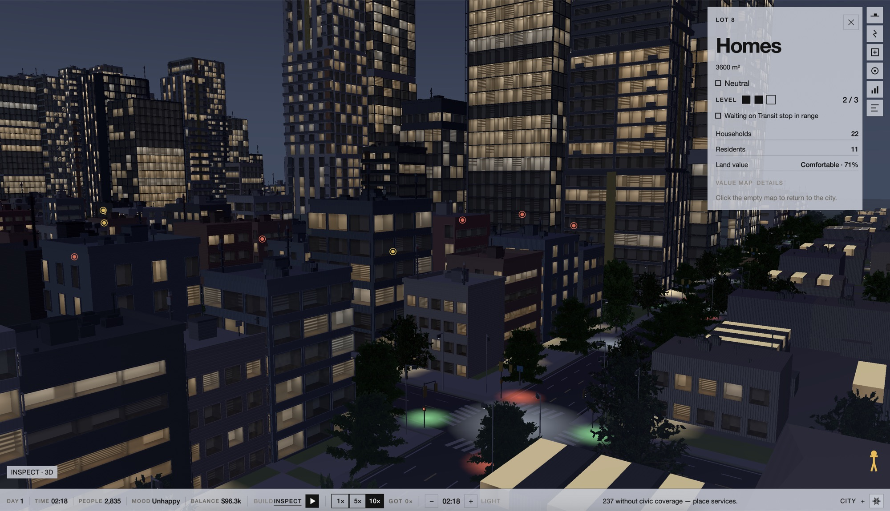